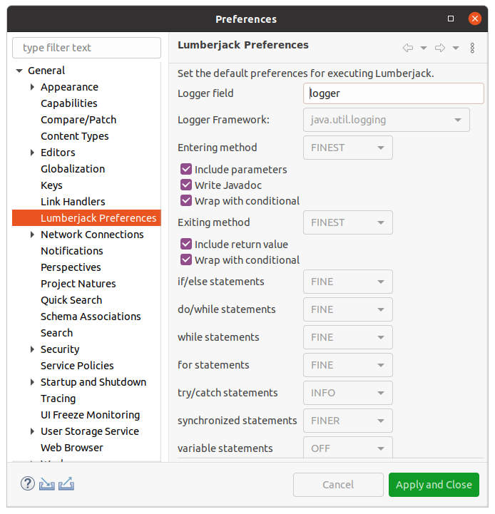

The Lumberjack plug-in utilizes the Eclipse Preference Store to maintain preferences. The following links explain how to use these preferences:
To understand the preferences, the page must first be opened. There are two points of access:
The preferences are contained on a single page.

The available preferences include values to set which logging framework should be used, which logging levels should be used for specific control statements, as well as options on what code should be logged. Once the logging strategy is determined click the Apply or Apply and Close button to save the preferences in the Eclipse Preference Store.
| Field | Description |
|---|---|
| Logger Field | The name of the variable to use for logging statements: Logger logger = Logger.getLogger("[class name]"); |
| Logger Framework | A selection of supported logging frameworks. When this value is changed, all other drop boxes are reset to OFF and all check boxes are deselected. This is necessary to match the available logging levels with the selected logging framework. |
| Entering method | The logging level to set for a method entering logging statement. logger.finest("entering [method name]"); |
| Include parameters | The logging level to set for logging the method parameters. logger.finest("entry parameters: [param name]=... |
| Write Javadoc | The logging level to set for logging the Javadoc. logger.finest("[Javadoc]"); |
| Wrap with conditional | The logging level to set for wrapping the Include parameters and Write Javadoc statements. if (logger.isLoggable(Level.FINEST)) { |
| Exiting method | The logging level to set for a method exiting logging statement. logger.finest("exiting [method name]"); |
| Include return value | The logging level to set for logging the return value. logger.finest("return value: [variable name]=... |
| Wrap with conditional | The logging level to set for wrapping the Include return value statement. if (logger.isLoggable(Level.FINEST)) { |
| if/else statements | The logging level to set for logging if/else statements. logger.fine(... |
| do/while statements | The logging level to set for logging do/while statements. logger.fine(... |
| while statements | The logging level to set for logging while statements. logger.fine(... |
| for statements | The logging level to set for logging for statements. logger.fine(... |
| try/catch statements | The logging level to set for logging try/catch statements. logger.info(... |
| synchronized statements | The logging level to set for logging synchronized statements. logger.finer(... |
| variable statements | The logging level to set for logging variable statements. When the level is set to OFF no logging statement will be generated. |
| method call statements | The logging level to set for logging method call statements. logger.info(... |
| switch statements | The logging level to set for logging switch statements. logger.fine(... |
| * All text in the table above wrapped with square brackets ( [ ] ) indicate a placeholder for actual text. | |
The best route to understand the preference options is to try them out!